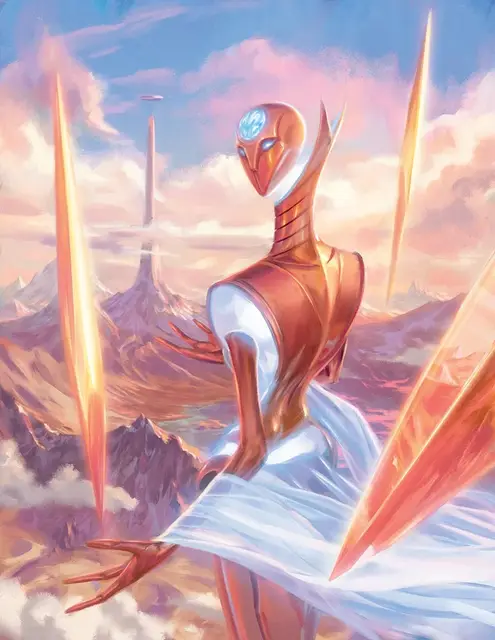

Рилмани аурумах
Aurumach Rilmani
Большой Небожитель, нейтральный

Класс Доспеха 18 (природный доспех)
Хиты 285 (30к10 + 120)
Скорость 0 футов, летая 40 футов (парит)
| мод | спас | ||
|---|---|---|---|
| СИЛ | 20 | +5 | +5 |
| ЛОВ | 21 | +5 | +11 |
| ТЕЛ | 18 | +4 | +4 |
| мод | спас | ||
|---|---|---|---|
| ИНТ | 21 | +5 | +11 |
| МДР | 18 | +4 | +4 |
| ХАР | 16 | +3 | +3 |
Навыки Восприятие +10, История +11, Магия +11
Сопротивление урону психическая энергия; немагический дробящий, колющий, рубящий
Чувства истинное зрение 120 футов, пассивное Восприятие 20
Языки Все, Телепатия 120 фт.
Опасность 17 (18000 опыта)
Бонус мастерства +6
Действия
Мультиатака. Аурумах совершает три атаки Явленным клинком или Сияющим лучом.
Явленный клинок. . Рукопашная атака оружием: +11 к попаданию, досягаемость 10 футов, одна цель. Попадание: 23 (4к8 + 5) урона силовым полем.
Сияющий луч. . Дальнобойная атака заклинанием: +11 к попаданию, дистанция 120 футов, одна цель. Попадание: 24 (3к12 + 5) урона силовым полем.
Использование заклинаний. Аурумах накладывает одно из следующих заклинаний, не нуждаясь в материальных компонентах, используя Интеллект в качестве базовой характеристики (Сл спасброска заклинания 19):
• Неограниченно: обнаружение магии [detect magic], обнаружение мыслей [detect thoughts]
• 1/день каждое: полёт [fly], обет [geas] (действием), замедление [slow], внушение [suggestion]
Бонусные действия
Аура клинков. Аурумах создает вокруг себя призрачную золотистую ауру клинков. Пока эта аура проявлена, каждое существо, начинающее свой ход в пределах 10 футов от аурумаха, должно совершить спасбросок Ловкости Сл 19, получая 16 (3к10) урона силовым полем при провале или половину этого урона при успехе. Аура исчезает через 1 минуту, когда аурумах становится недееспособен, умирает, или когда аурумах использует бонусное действие, чтобы окончить её.
Пробуждение слабостей (перезарядка 5-6). Аурумах пытается использовать свою магию, чтобы ослабить защиту существа, которое он может видеть в пределах 120 футов. Цель должна преуспеть в спасброске Мудрости Сл 19, иначе станет проклятой до конца следующего хода аурумаха. В следующий раз, когда аурумах попадает по проклятой цели Явленным клинком или Сияющим лучом, цель дополнительно получает 27 (6к8) урона силовым полем.
Описание
Из своих крепостей возле Шпиля во Внешних землях аурумахи наблюдают за сохранением космического статус-кво, выступая в качестве лидеров и стратегов рилмани. Используя таинственную магию, оккультные вычисления и сети информаторов, аурумахи следят за силами на разных планах. Только когда планарное равновесие оказывается под угрозой полного краха, эти неуловимые златокожие существа покидают Внешние земли, проявляя сверкающие клинки, чтобы уничтожить тех, кто угрожает стабильности мультивселенной.
Рилмани
Рилмани охраняют баланс между силами и философиями мультивселенной. Они стремятся поддерживать планарное равновесие, гарантируя, что добро, зло, закон или хаос никогда не станут слишком могущественными или слишком слабыми. Для рилмани каждая из этих сил является фундаментальной для существования мультивселенной. Всякий раз, когда кто-то угрожает склонить чашу весов в свою пользу или план находится на грани разрушения, рилмани действуют, чтобы уравнять шансы.
В то время как рилмани можно встретить где угодно, чаще всего их можно встретить на их родном плане, во Внешних землях, где они работают над тем, чтобы ни одна сила не оказывала чрезмерного воздействия на Согласованные владения.
Рилмани прямоходящие двуногие, с телами из живого металла, который по внешнему виду варьируется от холодного железа до блестящего золота. У большинства из них гладкие лица с немногочисленными особенностями, а их необычная анатомия часто действует вопреки силам природы.